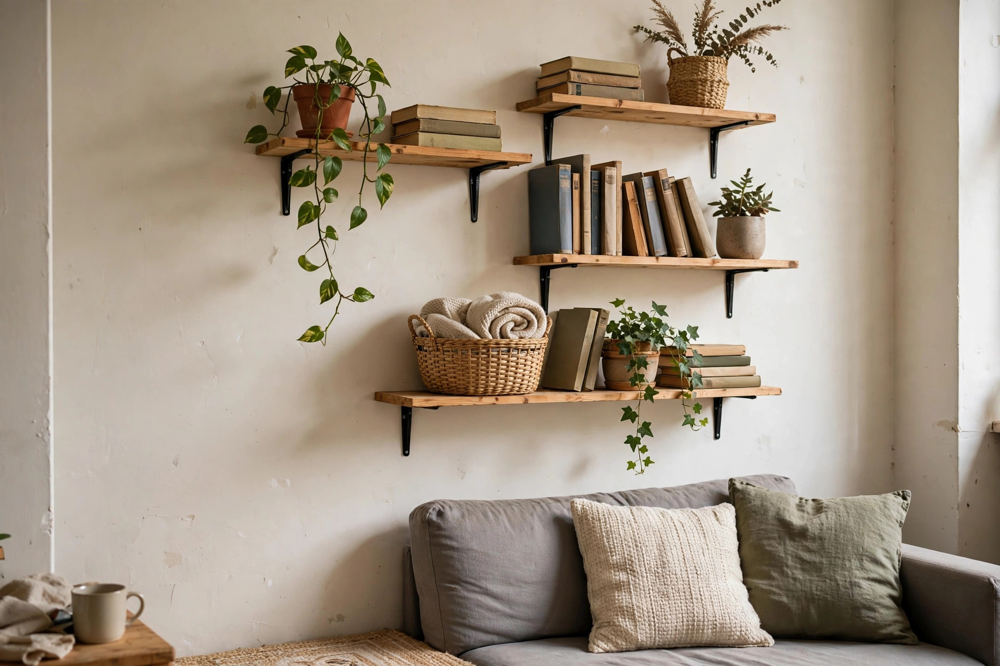

Budget Decor & DIY
DIY Floating Shelves for Under $30
Intro
Floating shelves are the small flat's best friend: they add storage and display space without taking a centimetre of floor, and they make a bare wall look finished. Shop-bought floating shelves can cost $30 each, but a board, two brackets and a little paint make the same shelf for under $10 — and you choose the length, the colour and the height, which matters when the wall is the only space you have left.
This guide has 12 DIY floating shelf ideas — brackets, boards and styling for small walls, each shelf under $30. Start with one shelf above a desk or a sofa, and style it before you add a second: one good shelf beats three crowded ones.

1. A board and two L-brackets: the classic shelf — $8–$12
The simplest floating shelf is a pine board and two L-brackets, painted the same colour as the wall so the brackets disappear. A 60 cm board costs about $5, two brackets about $4, and screws about $2. Fix the brackets to the wall studs or with wall plugs, rest the board on top, and screw it down from underneath. Paint the board and brackets together for a clean, floating look. This shelf holds books, plants and framed photos without wobbling.
2. A shelf from a reclaimed plank — $5–$10
A plank from a pallet, an old floorboard or a charity-shop shelf is a floating shelf with character for the price of sandpaper and brackets. Sand it smooth, oil or paint it, and mount it on hidden brackets for about $8. Reclaimed wood suits a rustic or boho room, and its marks and grain make it look expensive, not old. Check the plank for nails and rot before you use it, and cut it to the exact length of the wall gap it will fill.
3. Hidden brackets for a true floating look — $12–$18
Hidden rod brackets slide into holes drilled in the back of a thick board, so no bracket is visible at all. A pair of hidden brackets costs about $10, and a thick board about $6. Drill two holes in the board to match the rods, push the board on, and it appears to float. This is the best look for a shelf above a bed or a sofa, where a visible bracket would catch the eye. Use a spirit level — a floating shelf that tilts is worse than no shelf at all.
4. A picture ledge shelf for art and photos — $10–$15
A floating shelf with a small lip at the front becomes a picture ledge: lean framed prints, postcards and small photos against the wall without hanging any of them. A 90 cm ledge costs about $12 to make from a board and a thin strip of wood glued to the front edge. Lean the frames in overlapping layers, tallest at the back. A ledge is the easiest gallery wall in a rental, because swapping art means lifting a frame, not filling a hole.
5. A kitchen spice shelf by the cooker — $8–$12
A short floating shelf in the kitchen, mounted at eye level beside the cooker, holds spice jars, oils and the salt — the things you reach for while cooking. A 40 cm board and two brackets cost about $10. Keep the shelf narrow, about 12 cm deep, so jars sit in a single row and nothing hides behind anything else. A spice shelf frees a whole cupboard shelf, which in a small kitchen is worth more than the shelf itself.
6. A bathroom shelf above the sink — $10–$15
A floating shelf above the bathroom sink holds the everyday bottles — toothbrushes, skincare, perfume — and frees the sink edge, which is the smallest surface in the flat. A moisture-resistant board, painted or sealed, costs about $12 with brackets. Keep the shelf at eye level and only 12 cm deep, so you do not bump your head. A small tray on the shelf corrals the bottles and makes cleaning a one-wipe job.
7. Two short shelves instead of one long one — $15–$20
In a small room, two short shelves stacked or staggered look better than one long shelf, and they are easier to mount level. Two 40 cm shelves cost about $18 together. Stagger them — one higher on the left, one lower on the right — for a modern look, or stack them vertically in a narrow gap beside a door. Short shelves also hold less, which stops them becoming a dumping ground for everything that has no home.
8. A shelf inside a wardrobe or cupboard — $6–$10
A floating shelf inside a wardrobe doubles the storage without a new piece of furniture. A board cut to the wardrobe width, resting on two small brackets, costs about $8. It creates a second level for folded clothes, shoes or storage boxes. Measure the wardrobe interior carefully — a board 1 cm too long will not fit, and 1 cm too short will fall. This shelf is invisible from the room, so it does not need to be pretty, only level.
9. A plant shelf by the window — $10–$15
A floating shelf at window height is a plant shelf: trailing plants hang down, small pots sit in a row, and the plants get the light they need without taking up the sill. A 60 cm shelf costs about $12. Keep the shelf shallow, so pots do not block the light, and put a tray under each pot to catch water. Three small plants on a shelf look fuller than one large plant on the floor, and they cost less too.
10. A shelf with hooks underneath for mugs or keys — $12–$18
Screw three small hooks under a floating shelf and it does two jobs: the top holds books or jars, and the hooks hold mugs, keys or measuring cups underneath. The hooks cost about $3, the shelf about $12. In the kitchen, hooks under a shelf hold mugs and free a cupboard; by the door, they hold keys and the dog lead. Space the hooks evenly and keep the shelf itself uncluttered, so the hooks stay useful rather than crowded.
11. Paint the shelf the wall colour — $3–$5
A shelf painted exactly the wall colour disappears, and the objects on it appear to float. A small tester pot of paint costs about $4. Paint the board and any visible brackets, and let the shelf dry fully before mounting. This trick works best on a shelf holding light-coloured objects — books, white pots, pale frames — because the shelf itself becomes invisible and the display takes all the attention. It is the cheapest way to make a DIY shelf look built-in.
12. One shelf, styled and left alone — $0
The cheapest idea costs nothing: style the shelf you already have, and then leave it alone. Take everything off, keep the three things you love most, and put the rest away. A shelf with three objects and some empty space looks styled; a shelf with ten objects looks like storage. In a small room, the empty space on a shelf is as important as the shelf itself.
Conclusion
A DIY floating shelf is one of the best value projects in a small flat: a board, two brackets and an hour, and a bare wall becomes storage, display and decoration at once. Start with one shelf where you need it most — above the desk, beside the cooker, above the sink — mount it level, style it lightly, and let the empty space do its work. The second shelf can wait until the first one earns it.
Budget recap
- Board + L-brackets shelf: ~$10 - Hidden-bracket floating shelf: ~$16 - Picture ledge shelf: ~$12
Total for one shelf: ~$8–$18 — or $0 by restyling the shelf you already have.
Pinterest pin titles
- DIY Floating Shelves for Under $30 — 12 Ideas
- 12 Floating Shelf Ideas for Small Walls (Under $30)
- No Floor Space? 12 DIY Shelves That Float